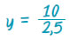
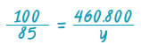

Α.6.5. Προβλήματα αναλογιών |
| Για να διαπιστώσουμε, εάν δυο ποσά είναι ανάλογα, χρησιμοποιούμε τα παρακάτω: |
|
1. Τον ορισμό των ανάλογων ποσών
Εξετάζουμε αν τα ποσά που μεταβάλλονται είναι τέτοια ώστε: όταν οι τιμές του ενός ποσού πολλαπλασιάζονται, με έναν αριθμό, τότε και οι αντίστοιχες τιμές του άλλου πολλαπλασιάζονται με τον ίδιο αριθμό.
Για παράδειγμα:
Αν 15 = 5 · 3 πρέπει 21 = 7 · 3
και αν 2,5 = 5 · πρέπει 3,5 = 7 ·
|
|
0,5 € το ένα τριαντάφυλλο
|
2. Τη σχέση y = α · x
Εξετάζουμε αν τα ποσά συνδέονται
με μια σχέση αναλογίας.
Για παράδειγμα:
Κόστος ανθοδέσμης = 0,5 · αριθμός τριαντάφυλλων
|
|
3. Τη σχέση 
Εξετάζουμε αν όλες οι αντίστοιχες τιμές των δύο ποσών έχουν σταθερό λόγο.
|
|
| |
| ΠΑΡΑΔΕΙΓΜΑΤΑ - ΕΦΑΡΜΟΓΕΣ |

|
Για να φτιάξουμε γλυκό βύσσινο πρέπει να καθαρίσουμε τα βύσσινα από τα κουκούτσια. Αν καθαρίσουμε 2,5 Κg βύσσινο, παίρνουμε 2 Κg καθαρό βύσσινο. Αν καθαρίσουμε 5 Κg βύσσινο, τι ποσότητα καθαρού βύσσινου θα πάρουμε; |
 |
 |
|
| |
Τα ποσά ακαθάριστο βύσσινο και καθαρό βύσσινο είναι ανάλογα.
Συμβολίζουμε με y την άγνωστη ποσότητα καθαρού βύσσινου και δημιουργούμε τον πίνακα αναλογίας.
|
| Βύσσινο με κουκούτσι |
2,5 Kg |
5 Kg |
| Καθαρό βύσσινο |
2 Kg |
y |
Θα έχουμε δηλαδή:
2,5 · y = 2 · 5, επομένως 2,5 · y = 10 συνεπώς,
 άρα, y = 4 Kg.
|
Το πρόβλημα μπορεί να λυθεί και με τη βοήθεια της γραφικής παράστασης των δύο ανάλογων ποσών, από την οποία μπορούμε να υπολογίσουμε την ποσότητα καθαρού βύσσινου (τεταγμένη του σημείου Β), από την ποσότητα των 5 Κg, βύσσινου με κουκούτσια (τετμημένη).
Η ημιευθεία, που αναπαριστά τη σχέση αναλογίας του προβλήματος μας, ορίζεται από τα σημεία Ο(0, 0) και Α(2,5 , 2)
Στον ημιάξονα Οx (κιλά βύσσινο με κουκούτσια) και στο σημείο που βρίσκεται ο αριθμός 5 φέρουμε κάθετη.
Αυτή τέμνει τη γραφική παράσταση της σχέσης αναλογίας, σε σημείο Β. Το σημείο Β έχει τετμημένη 5.
Η τεταγμένη του προκύπτει, αν φέρουμε κάθετη από το Β προς τον ημιάξονα Οy (καθαρό βύσσινο) και είναι 4 Κg.
|
 |
|
Ένας μεσίτης αγοράζει ένα σπίτι 360.000 € και σκοπεύει να το πουλήσει με κέρδος 28%. Σε ένα πελάτη έκανε έκπτωση 15%, επί της τιμής
πώλησης.
(α) Πόσο πουλήθηκε το σπίτι στον
πελάτη αυτόν;
(β) Ποιο είναι το ποσοστό κέρδους
του μεσίτη, για το σπίτι αυτό;
|
|
|
|
|
| |
Γνωρίζουμε ότι:
Δύο ποσά που συνδέονται με ποσοστιαία σχέση, είναι ποσά ανάλογα.
| (α) |
Για να βρεθεί η τιμή πώλησης του σπιτιού πρέπει ν' αφαιρεθεί η έκπτωση που έγινε στην αρχική τιμή πώλησης. Δηλαδή:
| Αρχική τιμή πώλησης |
100 |
460.800 |
| Τιμή πώλησης με έκπτωση 15% |
85 |
y |
Δηλαδή: 
Επομένως, 100 · y = 85 · 460.800 συνεπώς,
Άρα, y = 391.680 €. Ο πελάτης αγόρασε το σπίτι 391.680 €.
|
| (β) |
Για να υπολογίσουμε το ποσοστό κέρδους επί της τιμής αγοράς, πρέπει να ανάγουμε το κέρδος στα 100 €. Το κέρδος του εμπόρου είναι:
391.680 € – 360.000 € = 31.680 €
Έχουμε, λοιπόν, τον παρακάτω πίνακα αναλογίας:
| Τιμή αγοράς |
360.000 |
100 |
| Κέρδος |
31.680 |
y |
Δηλαδή: 
Επομένως, 360.000 · x = 31.680 · 100 συνεπώς,
Άρα, x = 8,8. Το ποσοστό κέρδους του εμπόρου είναι 8,8%.
|
|
|
Μικροπείραμα 
|
| ΑΣΚΗΣΕΙΣ ΚΑΙ ΠΡΟΒΛΗΜΑΤΑ |

|
Ένας πάσσαλος ύψους 1,2 m ρίχνει σκιά 3 m.
Την ίδια στιγμή ένα δέντρο ρίχνει σκιά 14 m. Αν
γνωρίζουμε ότι τα ποσά ύψος – σκιά είναι ανάλογα,
να βρεθεί το ύψος του δέντρου.
|
 |
 |
Το βάρος στο φεγγάρι και το βάρος στη γη είναι ποσά ανάλογα. Ένας αστροναύτης ζυγίζει στο φεγγάρι 13 Κg και στη γη 78 Κg. Πόσο θα ζυγίζει στο φεγγάρι ένα παιδί, που στη γη έχει βάρος 52 Κg;
Μικροπείραμα
|
|
|
 |
Από 100 Κg σταφύλια βγαίνουν 80 Κg μούστος. Ένας αμπελουργός θέλει να γεμίσει με μούστο 6 βαρέλια, των 350 Κg το καθένα. Πόσα Κg σταφύλια, της ίδιας ποιότητας, πρέπει να πατήσει; |
 |
Δύο εργάτες δούλεψαν σε μια οικοδομή και πήραν μαζί 270 €. Ο πρώτος δούλεψε 4 ημέρες και ο δεύτερος 5 ημέρες. Πόσα χρήματα αντιστοιχούν στον καθένα. |
 |
Το θαλασσινό νερό περιέχει αλάτι σε ποσοστό 3%. Πόσα κιλά θαλασσινό νερό πρέπει να εξατμιστούν για να πάρουμε 60 Κg αλάτι; |
 |
Ένας γεωργός είχε ένα χωράφι 7 στρέμματα και πήρε και το γειτονικό χωράφι εμβαδού 8 στρεμμάτων, για να φυτέψει καλαμπόκι. Η συμφωνία με το γείτονά του ήταν να του δώσει το 15% της παραγωγής του χωραφιού του. Η συνολική παραγωγή ήταν 14 τόνοι καλαμπόκι. Πόσους τόνους θα πάρει ο γεωργός και πόσους ο γείτονάς του; |
 |
Αν ψήσουμε 2,5 Κg ωμό κρέας θα μείνει 1,9 Κg ψημένο κρέας.
(α) Πόσο είναι το ποσοστό απώλειας που έχουμε;
(β) Πόσο κρέας πρέπει να ψήσουμε για να έχουμε 2,3 Κg ψημένο κρέας;
|
 |
Η μηνιαία κάρτα απεριορίστων διαδρομών στοιχίζει 12 € και η τιμή της θα αυξηθεί, κατά 75%. Το εισιτήριο στο αστικό λεωφορείο είναι 0,7 € και θα αυξηθεί, κατά 50%. Ένας εργαζόμενος παίρνει λεωφορείο, για να πάει και να γυρίσει από τη δουλειά του κάθε ημέρα, για είκοσι φορές το μήνα. Τον συμφέρει η χρήση της κάρτας ή όχι; |
 |
Ένα κεφάλαιο δίνει τόκο 1.000 € το χρόνο, με επιτόκιο 10%. Αν το επιτόκιο μειωθεί κατά 20%, πόσο τόκο θα δίνει το κεφάλαιο για ένα χρόνο; Πόσο τοις εκατό πρέπει ν' αυξήσουμε το κεφάλαιό μας για να έχουμε τον ίδιο τόκο, παρά την μείωση του επιτοκίου; |
 |
Συμπλήρωσε τον παρακάτω πίνακα και σχεδίασε διάγραμμα που αντιστοιχεί στα δεδομένα του προβλήματος.
| |
ΣΥΝΟΛΟ |
Με 0 παιδιά |
Με 1 παιδιά |
Με 2 παιδιά |
Με 3 παιδιά |
Με 4 παιδιά |
Πάνω από 4 παιδιά |
| Οικογένειες |
200 |
10 |
40 |
80 |
50 |
15 |
5 |
| Ποσοστά |
100% |
|
|
|
|
|
|
|
|
|